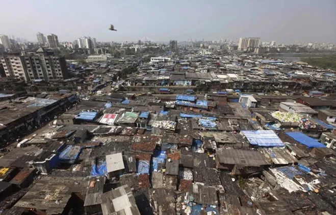
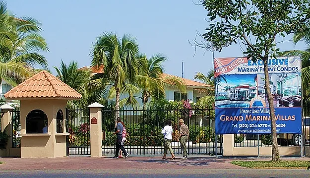
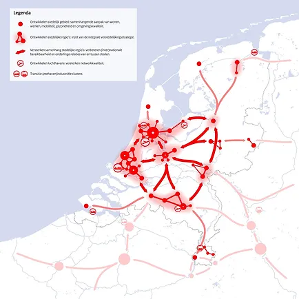
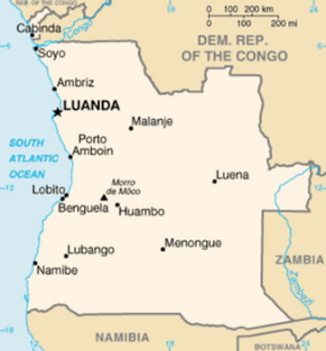
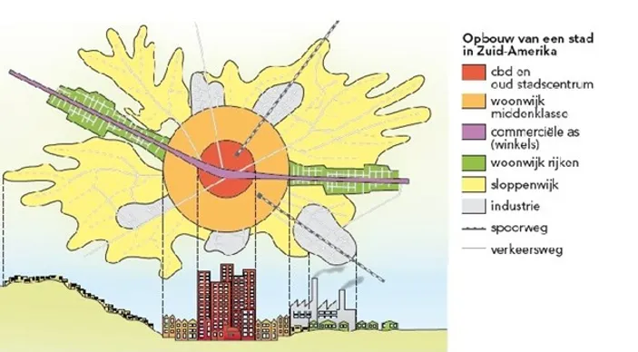
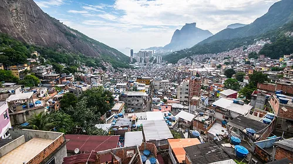
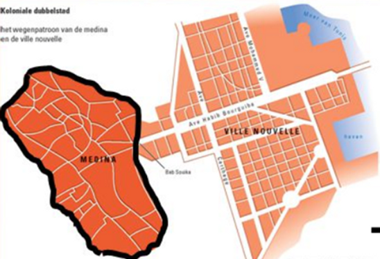

Paragraaf 2: steden in ontwikkelingslanden
Ontwikkeling van steden in arme landen
De voornaamste reden dat steden in arme landen zich anders ontwikkelen dan de steden in rijke landen is de welvaart.
In een rijk land gaan de mensen met veel geld naar randgebieden, terwijl in derde wereld landen de arme mensen juist naar de stad trekken. Werkgelegenheid is de reden waardoor in arme landen mensen naar de stad trekken, ook al zijn er in die steden veel te veel mensen voor de werkgelegenheid die er is. In die steden ontstaan er zogenoemde krottenwijken, of slums. Hier komen mensen terecht die niet genoeg geld hebben om een huis of appartement te huren/kopen. Ze komen naar de stad in de hoop dat ze een baan kunnen vinden, waardoor ze worden verlost van de armoede van het platteland.
Figuur 1: slum in Mumbai (India)
In de steden in de derdewereldlanden / ontwikkelingslanden heb je meestal een modern centrum dat veel lijkt op de centra van onze steden, maar daarbuiten zijn er kilometers aan sloppenwijken. De opbouw van een stad is heel anders dan die van een stad in een rijk land.
In arme landen is de verstedelijking veel later op gang gekomen dan in de rijke landen. Dit is in ieder geval te zien aan de gebouwen: steden als Amsterdam en Parijs hebben veel oude gebouwen in het centrum staan, terwijl er in steden in ontwikkelingslanden nauwelijks oude gebouwen staan; alles is (redelijk) nieuw. Verder breiden de steden in arme landen veel sneller uit dan in rijke landen. De steden in arme landen worden overbevolkt en de krottenwijken bevatten het grootste grootste deel van de stad. Daarnaast heb je in deze steden veel gated communities. Dit zijn woonwijken, vaak aan de rand van de stad, die alleen toegankelijk zijn voor bewoners die daar wonen. Alle in- en uitgangen zijn afgesloten en worden beveiligd tegen de omgeving.
Figuur 2: gated community
Primate city (in ontwikkelingslanden)
Steden in ontwikkelingslanden zijn de laatste jaren super snel gaan groeien (verstedelijking). Daardoor zijn grote steden in landen ontstaan. In sommige landen kun je spreken van een primate city. Een primate city is een stad die een veel groter inwoneraantal heeft dan de steden in de rest van het land of omgeving. Daarnaast is het op economisch, politiek en cultureel gebied van veel groter belang dan de omgeving. Dat betekent dus dat er in een primate city veel belangrijke dingen gebeuren. Een voorbeeld van een primate city is Parijs. Met haar 11,2 miljoen inwoners is het duidelijk de grootste en belangrijkste stad van Frankrijk. De tweede grootste stad van Frankrijk, Lyon, heeft namelijk maar 2,2 miljoen inwoners.
Figuur 3: primate city Parijs
Rijke landen, zoals Nederland hebben vaak geen primate city, maar een stedelijk netwerk. Dit is een groep steden die samen zijn verbonden, veel samenwerken en afhanklijk zijn van elkaar. Bij een stedelijk netwerk zijn er meerdere grote en belangrijk steden in één land, in plaats van alles in één grote stad. Hieronder zie je een kaart van Brabant en Nederland, waar het stedelijk netwerk is uitgebeeld. Zoals je kunt zien staan de steden in verbinding met elkaar, omdat ze samenwerken. Daarnaast is te zien dat er geen duidelijk middelpunt is, wat ook weer te maken heeft met het stedelijk netwerk.
Figuur 4: stedelijk netwerk in Nederland
In figuur 5 zie je een wereldkaart waarop je duidelijk kan zien welke landen in de wereld een primate city hebben en welke niet. De grijze landen hebben wél een primate city, en de rode landen niet. Zoals je kunt zien, zijn de meeste westerse landen rood, en hebben zij dus geen primate city (met een paar uitzonderingen natuurlijk). Veel ontwikkelingslanden zijn grijs en hebben dus wél een primate city. Hoe zou dat nou komen?

Figuur 5: wereldkaart landen met een primate city
Dat heeft te maken met de ontwikkeling van steden in deze landen, zoals we eerder besproken hebben. Omdat de groei in arme landen zo snel gaat (ook wel verstedelijking, of urbanisatie genoemd), wordt een stad ook heel snel groter. Hierdoor krijgt de stad alleen maar meer aanzien in de omgeving en vervolgens gaan mensen van het platteland sneller naar deze stad toe. Omdat deze stad zo snel en hard groeit, valt het zwaartepunt ook meteen op deze stad. Als je dan dus wilt verhuizen naar de grote stad, zal je dus steeds sneller kiezen voor deze grote bekende stad. Andere steden vallen hierdoor een beetje weg. Voor je het weet heb je een primate city. Een voorbeeld van zo’n primate city in een ontwikkelingsland is Luanda in Angola. Angola is een van de minst ontwikkelde landen ter wereld. Deze stad heeft ruim 2 miljoen inwoners, terwijl de tweede grootste stad er nog geen 300.000 heeft. Deze stad ligt aan de oceaan, wat natuurlijk gunstig is voor de handel en ontwikkeling van de stad, wat waarschijnlijk een grote rol heeft gespeeld in de groei van deze stad. Luanda zie je hieronder op de kaart van Angola liggen.
Figuur 7: Luanda, een primate city in Angola
Opbouw van een niet-westerse stad
Ook in een grote stad in een ontwikkelingsland vind je vaak een CBD. Doordat planning, zoals in de westerse steden, vaak ontbreekt zijn er soms meerdere CBD’s die zijn ontstaan door particulier initiatief. Voor het aanleggen van deze CBD’s heeft het historische centrum het vaak moeten ontgelden.
Het aantal mensen dat in ontwikkelingslanden van het platteland naar de stad trekt is enorm. Hierdoor ontstaat urbanisatie, de groei van steden als gevolg van een trek van het platteland naar de stad. Er is in ontwikkelingslanden sprake van een vestigingsoverschot. Dit heeft tot gevolg dat veel mensen die naar de stad trekken geen woon- of verblijfplaats hebben. Daarom kiezen deze mensen er vaak voor om op een open plek in de stad zelf een woning te bouwen.
De wijken die dan ontstaan noemen we krottenwijken (slums / bidonville / favela). Deze krottenwijken vind je op plekken waar veel mensen liever niet wonen zoals bij een vuilnisbelt, spoorlijn of bij een fabriek. Het beeld dat we van krottenwijken hebben is vaak heel negatief. We denken aan een aantal golfplaten of karton waar een woning mee in elkaar geknutseld is, maar in de praktijk kunnen woningen door bewoners al flink zijn opgeknapt. Dit heeft vooral te maken met hoelang een krottenwijk al bestaat.
Figuur 8: opbouw van een Zuid-Amerikaanse stad
Figuur 9: krottenwijk (Rochina) op een heuvel
Koloniale dubbelstad
In het verleden hebben bijvoorbeeld landen als Nederland, Frankrijk, Spanje, Portugal en Groot-Brittannië koloniën gehad. Gebieden waar men de grondstoffen weg haalde voor handel en de industrie.
Je kunt dit aan de ligging en de vorm van de steden in deze voormalige koloniën nog terug zien. Het moederland stichtte aan de kust een handelsnederzetting/stad waar alle grondstoffen/spullen uit het binnenland naar toe gebracht werden en opgeslagen in pakhuizen. Zo’n handelsnederzetting groeide uit tot de belangrijkste stad van het land en alle wegen lopen via deze stad naar andere plaatsen in het land. Er zijn bijna geen verbindingen tussen de andere plaatsen onderling. Was er al een stad die aan de kust lag dan bouwde de mensen uit het moederland een nieuwe stad tegen de bestaande stad aan. Deze stad is dan Europees opgezet met rechte wegen, parken dit in tegenstelling tot de oude stad die kronkelige wegen heeft en chaotischer overkomt. Dit noemen we een koloniale dubbelstad.
Figuur 10: voorbeeld van een koloniale dubbelstad